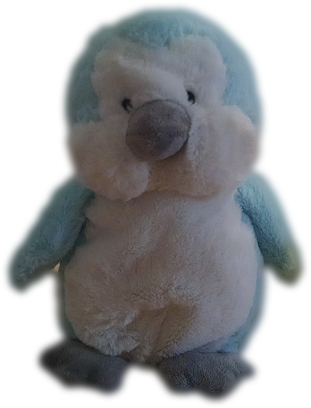
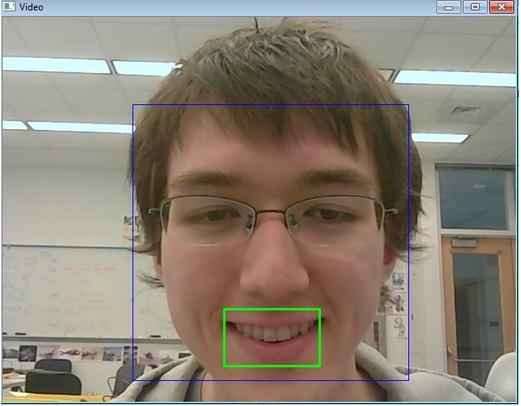
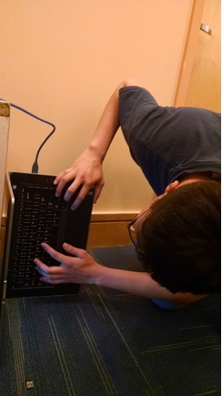

Principles of Engineering
Principles of Engineering is an undergraduate course at Olin College of Engineering that seeks to teach students to "integrate analysis, qualitative design, quantitative optimization, experiments, and simulations to improve their ability to engineer real systems". For our Fall 2014 final project, we were tasked to create a mechatronic project with mechanical, software, and hardware components.
The Team
Pratool Gadtaula
[Pratool's bio]
Meg Lidrbauch
[Meg's bio]

Julian Morris
Engineering with Computing major, class of 2016. Is secretly a troll. Enjoys taking selfies in the corner (he says he’s working on the smile detector but we know what he’s actually up to). Skills include Java, Python, Arduino programming, and playing with everything around him when he’s bored. Is currently learning SQL, C++, and how to dance like a penguin. His contributions to this project included working on the software side, website, and causing a minor explosion with a battery.
Michelle Sit
A Wellesley College senior. Biked to come to team meetings from Wellesley sometimes on weekends. Helped create the dancing motion, the smile detector, the final website, and came up with the dancing moves for the penguin. Dreams of becoming a penguin one day. Likes to perform martial arts. Possibly related to her desire to become a dancing penguin.

Jay Woo
Jay likes to work sideways. No one knows why, but he does. In addition to making life harder for himself, Jay is taking 6 classes (5 for credit). For this project, Jay pretended he was a Mech:E, designing the ornithopter linkage that makes the wings flap. Hmm… ornithopter… ornithology… the study of birds… eeenteresting. Oh, uh. Yeah, Jay. Okay. Jay was very helpful, but we can’t remember what he did. But we couldn’t have done it without him! We <3 Jay.